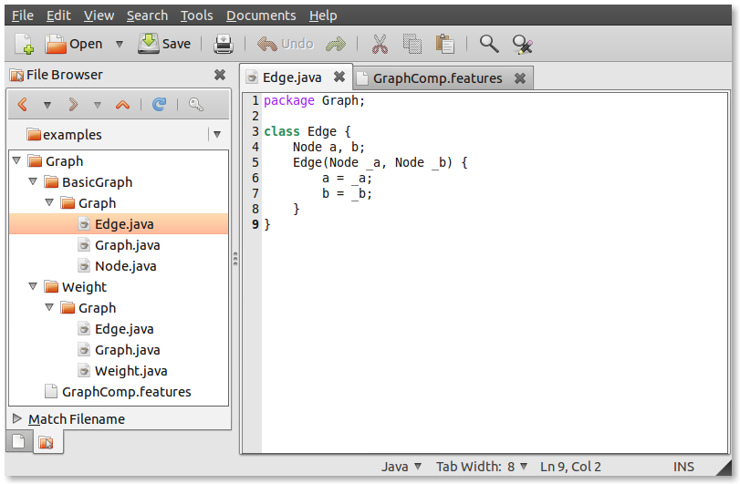

Feature-oriented programming aims at the modularization of features in source code. A feature is a unit of functionality of a software system that satisfies a requirement, represents a design decision, and provides a potential configuration option. Implementing a feature on top of a base program involves the addition of new program elements and the extension and refinement of existing program elements. For example, the implementation of a transaction feature on top of a database system requires the addition of new program structures for representing transactions as well as the integration of transaction management code into the core database system. For more information on feature orientation we refer the interested reader to a survey paper.
Fuji is an extensible compiler that supports feature-oriented programming in Java. In contrast to other feature-oriented tools (e.g., the AHEAD Tool Suite and FeatureHouse), Fuji does not rely on a source-to-source transformation but is a fully-fledged compiler that produces standard Java bytecode. Technically, Fuji is based on the JastAdd Extensible Java Compiler and supports the full Java 7 standard.
Fuji follows the tradition of feature orientation to represent features as containment hierarchies, which are technically realized by file system directories. The files found inside a containment hierachy belong to the corresponding feature. For example, to implement a simple graph library that consists of the two features BasicGraph and Weight, a programmer creates two directories, each of which contains the files that belong to the feature in question:

A feature may contain standard Java packages, interfaces, and classes. For
example, feature BasicGraph contains the three
classes Node, Edge, and Graph:
Furthermore, Fuji supports the concept of class refinement. That is, when a
feature is composed with another feature, it may refine the classes of the other
feature. For example, to implement feature Weight, we add a new
class Weight representing edge weights and we refine class Edge
such that each Edge object has a field weight.
Furthermore we refine class Graph by appending a new add method
that allows to add weighted edges to a graph:
Technically, the composition of features and refinement of classes are implemented via superimposition. For more details, we refer the interested reader to the FeatureHouse website.
Fuji is fully compatible with FeatureHouse. Additionally, it implements a novel access
control model for feature-oriented programming. It provides three new
modifiers feature, subsequent,
and program for class members. The semantics of the modifiers and
the details of the model are described in
a scientific paper. We provide two versions of Fuji: one with and one without the novel access control model.
Fuji is deployed in the form of a single Jar archive. As command line arguments, it expects a file that lists the features to be composed. The features listed in the file must be implemented by corresponding containment hierarchies reachable from the working directory.
To try out the graph example we described above, download the example
programs and compile Fuji first. We assume that Fuji
Jar archive is in the Graph directory (the root directory of the
example). Then invoke Fuji as follows:
The file GraphComp.features lists the two features we
want to compose:
The generated class files will be put in the classes sub-directory. To invoke the compiled program run:
Fuji type checker implements product-based, feature-based, and family-based typechecking strategies.
To perform a family-based type check, run in the command line:
To perform a feature-based type check, run in the command line:
To perform a product-based type check, run in the command line:
You can use the same procedure to type check the 12 subject systems from the Fuji collection. Alternatively, you can use the scripts from the complete project data.
We empirically compared the three typechecking strategies and presented the results in a scientific paper.
Fuji has been developed at the University of Passau, Germany. For more information please contact the developers: